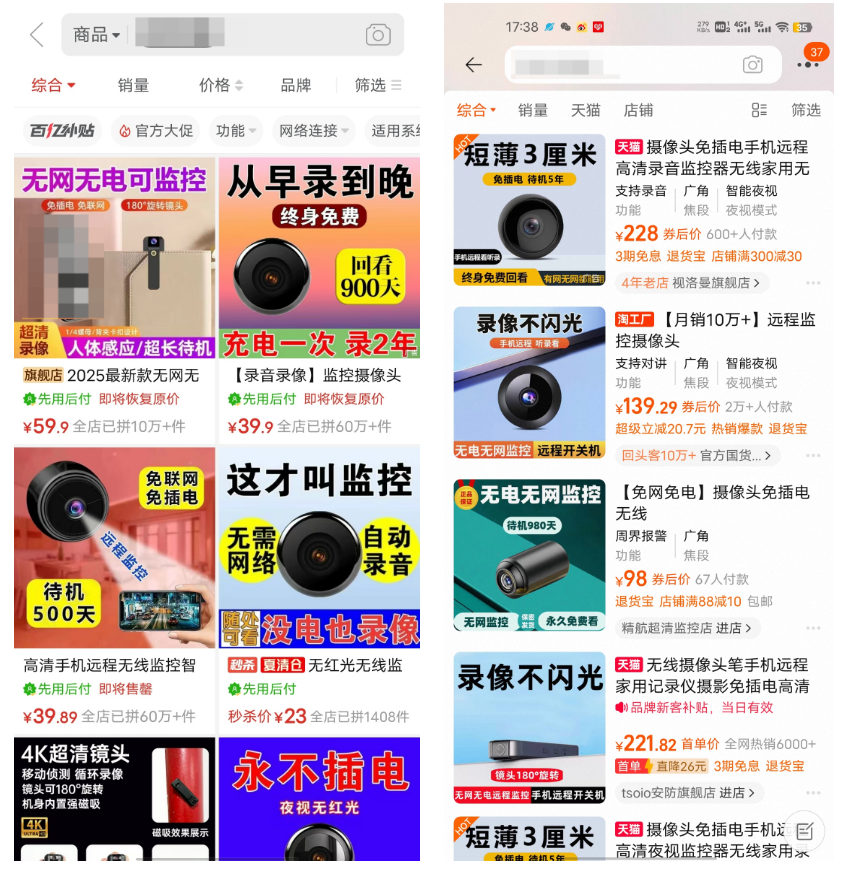

1 | DISCLAIMER: 本文所涉及的 MaskPark 事件相关信息及数据，主要来源于《南方日报》等媒体公开报道。作者非技术领域专业人士，文中对 Telegram 功能、摄像头破解技术问题等内容的描述，旨在进行现象分析与科普，不构成专业技术判断。 |
目录
一、MaskPark事件
Telegram 群组“ MaskPark树洞论坛”曝光后，引发了网络舆论的强烈震荡。
.png)
据《南方日报》报道，MaskPark并非一时兴起的个人论坛，而是早已形成产业化链条的黑产网络。该组织下设多个子群，订阅人数超过 10万人，总触达人数或达 90万之巨，覆盖内容包括女性试衣、如厕、洗浴、家居生活等高度隐私场景，甚至不乏 未成年人、熟人亲属的受害画面。极端案例如父亲对双胞胎女儿进行性侵，行径骇人听闻。它不仅传播偷拍内容，还存在专门的群组提供贩卖针孔摄像头业务，教唆如何将摄像头安装到各类日用品中，其中最大的群组订阅人数超过22万人。
与韩国震惊全国的“N号房”案相比，MaskPark的运营方式更为隐秘、分散，也更日常化。它不需要受害人上传自拍，直接依赖技术手段操控设备，内容覆盖范围更广、获取成本更低， 使无意识的受害者数量呈指数增长。从网络流传的截图还能看出，部分摄像内容附带地区定位，进一步提升了危险程度。
该事件在7月18日和7月23日两度登上热搜，引发社会各界的广泛关注和强烈谴责。在舆论压力下，论坛最大群组已被关停，但问题并未得到根本解决，反而因此更为严峻。
第一，卖针孔摄像头的群组和很多小型偷拍群依然存在，继续着他们的违法勾当。第二，Telegram的频道关停后，调查、取证都难以完成。部分男性将这件事作为男女对立的话题素材甚至谣言，而非值得调查的数字犯罪事件。
二、MaskPark事件中的质疑声音
随着信息不断发酵，不少网友，尤其是男性群体，开始对事件的核心叙述、数据真伪及社会反响提出质疑，主要有以下几个角度：
（一） 数据真实性质疑
代表观点：
- “说是10万人，之前是90万，数据完全没有来源。”
- “电报群组有用户上限，90万人根本不可能。”
- “这么大规模的平台怎么会一点外网资源都没有流出？”
其实，这是小看了Telegram。
Telegram有四大核心功能——Channels（频道）、Supergroups（超级群组）、Gigagroups（巨型群组）和 Basic groups（基础群组）。其中，频道和巨型群组均无数量限制，超级群组上限是200,000人，基础群组则限定在200人以内。
*如果有兴趣了解，文末写了一篇附录，科普Telegram的这四大功能的特性、实现。
所以，Telegram群组达到90万人并不是“根本不可能”。但毕竟频道以及相关群组都已经无法加入，准确的数字是很难查证了。
查证、列举证据是媒体应当做到的。这里首先有必要批评一下最开始做报道的文章：

其次，必须明确的是， 数据的失真不等于事件不存在。只要存在偷拍、传播隐私、交易针孔摄像头等行为，就已经触及违法犯罪的红线。因此，对数据的质疑应导向更精准的事实陈述，而非对问题本身的全盘否定。
（二） 截图可疑
代表观点：
- 多个爆料图不是来自同一App样式，疑似剪辑。
- 所谓“偷拍”图几乎都是“情色图”“卖片图”，而非偷拍实锤。
- “截图来源可疑，是片哥钓鱼还是真实聊天记录都说不清。”
我写文章的习惯是希望先说清楚事实，并且尽量找一些支持性的来源信息。但是，目前网络上能找到的MaskPark内部记录基本都是聊天截图，其中一部分像素还很低。
以证据的视角来看，它们当然是不完美的。但是，MaskPark事件目前所处的阶段是提供线索， 线索和证据需要达到的可信度是完全不一样的。截图中所反映出的内容指向性是明确的。无论是讨论偷拍技巧、传播疑似隐私照片，还是涉及针孔摄像头交易等信息，都在一定程度上揭示了可能存在的违法犯罪行为，这就已经是合格的线索了。
普通公民/受害者负有的调查义务和具备的调查能力都有限。这就像受害者报案时，无需提供完整的证据链 —— 如果凡事都要求普通人拿出铁证，那公安机关的侦查职能便失去了存在的意义。在现实中，报案者或者检举者能做的，只是提供自己被侵犯的线索、回忆关键信息。深入调查、固定证据、追捕嫌疑人等工作，本就属于公权力机关的职责范畴。
而且，MaskPark及的是境外社交平台上的违法违规内容，其传播和留存本身就面临诸多限制。对于爆料者而言，取这些证据可能并非易事。匆忙整理和发布的过程中，出现一些疏漏或不够严谨的地方，或许是可以理解的。毕竟，他们可能更多地是想尽快将这种恶劣行为公之于众，引起受害者关注。
我不认为现有的内容能直接拼凑出MaskPark事件的面貌。但它绝不因此就能被打为谣言。
（三）政府不可能毫无察觉
代表观点：
- “一个10万人群组在中国能毫无监管？”
- “要是真有一个10万人群组，你最好祈祷他们只是做点偷拍的勾当。”
- “如果真有，早就是公安高调破案的大案。”
这是典型的从国家治理效率与敏感度出发的反推逻辑。其潜台词包括：
- 我国政府对网络空间尤其是涉黄、涉政内容的监管向来雷厉风行；
- 大规模的违法群组必然会被盯上；
- 如果没有官方通报或打击行动，那很可能是子虚乌有。
这种观点能引发共鸣，正是因为它迎合了很多人对中国强监管体制的直觉理解。但它其实存在 以偏概全的问题，忽略了平台差异与执法现实——存在≠公开暴露≠立即被打击。
境内平台（微博、微信） | 境外平台（Telegram、Discord） | |
内容审查机制 | 自动+人工，近实时 | 依赖举报或平台自审，极不及时 |
用户实名制 | 强制、联动公安数据 | 通常可匿名，手机号注册门槛低 |
平台数据可取性 | 企业配合高，执法便捷 | 外国公司，跨境取证难 |
平台封禁执行 | 可迅速封群封号 | 外部平台不受中国监管 |
TG之所以成为各路犯罪分子的温床，就是因为它是一个 去中心化加密通信平台，具备以下几个在现实治理中难以攻破的特征：
- 平台管控弱，内容封锁难度大：Telegram并不像微博或微信那样由中国本地企业运营，政府不能通过平台方进行高效的信息过滤与溯源；
- 端对端加密与匿名性：即使掌握群组信息，也很难反推用户真实身份与活动轨迹；
- 墙外平台数据调取难度极高：对境外服务器的数据获取牵涉司法协作与外交程序。
TG的群组聊天内容也不是默认公开的，一个用户能看到的群组和内容高度受限于其TG社交圈。即使群组用户人数达到数万的数量级，对外可见度也极低。执法机关如果不实时监控用户的手机界面，是几乎不可能从平台侧穿透通信内容的。
我国执法资源的有限性不是什么秘密，警力常年告急，在没有明确举报的情况下，未必会先派人“盯上”。而且，或许有些TG群组已被监管部门注意，但是否立案、何时行动、是否高调公布，涉及执法策略和政治判断， 不宜简单基于此做出反面推断，否定事件的真实性。
（四） 搞黄色而已
代表观点：
- “偷拍当然不好，但就是几个搞黄色的群。”
- “大家翻墙不就为了看片么？看个黄片而已，有啥大惊小怪？”
在中国境内，通过翻墙浏览和传播非法色情内容本身并不受到鼓励。
更关键的是，MaskPark事件的指控远不止于色情消费，而是疑似涉及大规模组织偷拍、侵犯公民隐私，甚至出现未成年、暴力、偷拍设备交易等线索。这些行为在中国现行法律体系下，会涉及严重的刑事犯罪。
此外，大规模拍摄与传播隐私影像，其核心不是“观众看了什么”，而是被拍摄者在未同意的情况下被暴露于公共视野中。这是对人格权的践踏， 不应被轻描淡写为“看片自由”一部分。
面对如此大规模、可能系统化运作的偷拍产业链，大事化小小事化了的态度是不可取的。
（五） 媒体与舆论放大/境外势力炒作/性别对立
代表观点：
- “这是女拳和BBC合谋挑拨男女对立。”
- “又是借n号房的热度嫁接来搞中国。”
- “我不是偷拍者，却被当成了集体犯罪的一份子。”
- “女性在攻击‘中国男性’，那我当然要反击。”
这些质疑反映了当代中国社会中对性别议题、言论战、外部话语入侵的高度紧张。但是，最关键的是，如果这次事件中的确存在违法犯罪行为，那么再强烈地反对标签化/对立/境外势力，也无法改变这些行为本身的性质。
女性在这类事件中最根本的情绪，并不是“讨伐所有中国男性”，而是“对被偷窥和被操控的不安”，是对在公共空间中依然缺乏安全保障的愤怒。她们抗议的，是结构性的不公，而不是每一位具体男性个体。
这类事件真正需要的，不是性别对立的情绪宣泄，而是回归 制度责任与法律路径：我们是否有有效的打击偷拍、保护隐私的机制？平台是否履行了应尽的内容监管义务？执法机关是否及时介入调查？公众能否在知情权和防恐慌之间找到平衡？
在这种集体情绪高涨、舆论容易两极化的时刻，我们更需要建立分层思维能力：既能批判媒体标签化对公共感知的扭曲，也能正视事件本身可能的违法性质；既能识破“阴谋论”的荒谬之处，也能反思制度漏洞给阴谋论以滋生的土壤。
三、我们应该思考的其他问题
（一）这不是性别问题
我认为目前很多人没有意识到这个问题的严重性。
MaskPark没有经过调查和证实，但偷拍问题本身是长期存在，甚至愈演愈烈的，受害者也不仅限于女性。它涉及性别问题，但更关乎 普通人能否在日常生活中拥有基本的隐私与安全感。
近年来，不法分子将微型摄像头伪装成插座、路由器、纸巾盒、闹钟、车钥匙等常见物品，在电商和社交平台上通过隐蔽关键词、拆单交易等方式进行售卖和转运。一些产品甚至拥有夜视、远程操控等高隐蔽性的技术功能，仅需几百元即可完成偷拍用途。许多摄像头外观与日常用品几乎无异，甚至被刻意设计得更像真的物品，以假乱真程度令人震惊。

电商平台和社交软件上，“针孔摄像头”“偷拍” 等关键词被屏蔽，却挡不住 “胶囊”“真空无线摄像头”“取证神器” 等隐晦词汇的大行其道。商家在产品详情页面标注 “请勿做违法用途” 的同时，用 “安装不显眼”“找得到，我吃掉”“超清录像、看清人脸” 等宣传语赤裸裸地暗示偷拍功能，甚至承诺 “保密发货”。
从产品本身来看，无论是直径 2.3 厘米的 “子弹头” 摄像头，还是不到指甲盖大小的模组摄像头，其功能设计完全服务于偷窥这一核心需求 —— 支持远程无线监控、实时传输、多人分享，待机时间最长可达 900 多天，甚至能通过锂电池摆脱电源束缚，通过内置数据卡摆脱网络限制，随意放置在办公室、酒店、公共卫生间、出租屋等任何场所。
任何被盯上的对象，无论性别、年龄，都可能沦为被窥视的目标。
恐怕没有人想要以这样的方式被放到网上，也没有人希望自己的家人、朋友、身边的人，受到这样的伤害。
（二）偷拍产业链为什么屡禁不止？
2014年8月，新民周刊就针对偷拍产业链进行了调查。
十一年后，偷拍之风不仅没有衰落，反而因为技术的便利更加盛行。
偷拍盗摄的顽固性，源于法律惩戒、监管执行与技术发展的多重矛盾。
1. 利润高，惩罚轻
从法律层面看，现行法规对非法生产、销售窃照器材的处罚力度与违法收益严重失衡。
例如，《禁止非法生产销售使用窃听窃照专用器材和 “伪基站” 设备的规定》中，不构成犯罪的违法者仅面临 3 万元以下罚款。
这一条当中所指的罪名，一般认为是“非法使用窃听、窃照专用器材罪”。但这一罪名的适用是存在不少争议的。一方面，“非法使用窃听、窃照专用器材，造成严重后果” 的表述中，“严重后果” 缺乏明确解释。另外，法律适用存在复杂性，场所属于私人还是半公共区域、主观认定困难等问题，对固定客观证据要求极高，最终往往是拘留罚款，而后不了了之。
与轻微的代价相对，铤而走险的利益是巨大的。
在销售端，商家通过电商平台、社交软件等渠道售卖偷拍设备，采用 “挂羊头卖狗肉” 的方式，以 “民用监控设备” 的名义销售具有偷拍功能的产品。 百元成本的摄像头经伪装后可售价数百元，定制化产品利润更高。
而在下游，一些不法分子将偷拍的视频进行传播、贩卖牟利。
在最高人民法院公布的典型案件中，2021 年 3 月以来，被告人颜某平、颜某建将窃照专用器材分别安装在三家酒店的多个房间内，使用手机 APP 将窃照专用器材与酒店房间内 Wi-Fi 和自己的手机配对连接，并设置了远程使用手机 APP 观看房间内实时监控录像、回放录像、下载录像的功能，用于偷拍住店旅客，造成恶劣社会影响。在另一起制作、贩卖淫秽物品牟利案中，2021 年 4 月至 2022 年 1 月，被告人石某等人，在多家宾馆、酒店房间内安装偷拍设备，偷拍入住旅客的隐私活动，并制作成视频，通过即时通信软件发布贩卖信息进行销售牟利，非法获利 29 万余元。
的确，将所得影像资料用于牟利、传播，也是可能构成犯罪的，比如：
- 侵犯公民个人信息罪：若偷拍画面涉及身份证明、地址、家庭环境等，可按非法获取、提供、出售公民个人信息处理；
- 传播淫秽物品罪：若画面涉及性隐私，即便不用于营利也可入罪；
- 侮辱、诽谤、侵害隐私权：《民法典》首次系统性规定了“隐私权”概念，明确“摄像、偷拍、偷录他人私密活动”属违法行为。
但问题是，这些罪名多数以“结果严重”为定罪门槛。例如，侵犯隐私权需造成“较大精神伤害”，传播淫秽物品则通常要求“传播范围广或内容恶劣”。而在偷拍案件中，大量是被动式的、不自知的侵害，受害人难以知情、举证和维权——一方在明，一方在暗。
作为一个奉行罪刑法定的现代国家，在不能入刑的情况下，就只能按照行政处罚处理了。
《治安管理处罚法》第42条规定了对偷拍行为的治安拘留与罚款，但处罚力度极低（拘留5日以下或罚款500元以下）， 明显缺乏威慑力。
如此一来，违法的代价是轻微的，被捕的可能性是算不上高的，利润率又是可观的，自然愈演愈烈。
2. 监管跟不上
法律规定和执法现状无法兜底的情况下，监管环节的漏洞进一步为产业链的生存留出了空间。
生产端，大量微型摄像头来自分散的手工作坊，这些作坊无固定厂址、无资质备案，基层市场监管部门受限于人力和技术手段，难以实现全链条追踪。偷拍设备的核心组件（如模组摄像头、无线传输模块）技术含量低，通过简单组装即可生产。即使是缺乏组装能力的作坊，也能借用现有的教程将其轻易伪装成车钥匙、打火机等日常用品。
销售端，电商平台和社交软件的关键词规避成为常态，让监管部门难以识别和追踪。酒店、民宿等场所管理方也未将防偷拍检查纳入日常管理，为偷拍行为留下空间。更棘手的是跨平台交易的碎片化 —— 从社交软件沟通需求、境内外电商平台下单到第三方物流配送，各环节信息割裂，缺乏统一的监管协同机制，往往形成 “平台管不了、部门管不全” 的真空状态。
想要通过截获设备开展侦查也是非常困难的。
一方面，设备技术越来越先进了。
近年来曝光的事件中，偷拍设备的体积越来越小，而画质却越来越清晰，有的达到 4K 级别。在功能上，一些偷拍设备甚至可以躲避红外线探测，具备人脸识别、声音录制、红外线夜视等功能，就算光照不足，依然能够拍出清晰的影像。有的针孔摄像头可以实现无线连接、实时直播、云端存储、手机查看，购买账号后，可以包月包季甚至包年观看。专业的摄像头还具有高清、夜视、远程传输且不易被信号检测设备发现的特点。
另一方面，偷拍者的手法、防备意识也在增强。
在浙江湖州警方破获的一起偷拍案件中，犯罪嫌疑人将摄像头安装在酒店中央空调的通风口，先把空调的滤网拆下来，然后把摄像头跟空调的电源连接在一起，再把滤网装上去进行隐蔽，通过通风口的角度偷拍整个房间。如此隐蔽的安装方式，一般人员很难发现。
湖北省宜昌市公安局西陵区分局云集派出所刘晨也表示，偷拍设备会伪装成日常用品，藏匿在各种隐蔽角落，难以察觉与定位。即使发现了偷拍设备，也很难溯源到最初的安装者。而且，偷拍者会使用加密技术保护内容，设备中的影像可能被加密、删除或远程销毁，恢复与固定数据需要专业技术与设备支持。
以上种种，促成了今天的局面。
（三）常规摄像头为什么这么容易被破解？
偷拍视频的来源不一定是专用的偷拍设备，还可能是屋主放心大胆地买来置于自己家中的家用/宠物摄像头。
这些本应用于守护安全的设备，为何会沦为侵犯隐私的工具？黑客又是如何破解的？
网络摄像头之所以成为黑客的囊中之物，根源在于设备设计缺陷与用户安全意识不足。
第一是弱口令问题。
多数厂商为降低用户使用门槛，会预设简单密码（如 “admin”“123456”）。很多用户开始使用后，没有修改密码的意识。部分设备在密码修改环节未限制复杂度，“888888”“666666” 等简单组合仍被广泛使用。黑客只需通过密码字典工具，对扫描到的设备进行批量尝试即可。
在浙江一起案件中，警方查获的黑客工具包中，包含 2000 余个常用密码组合，仅用 3 小时就破解了某小区 17 户家庭的摄像头权限。类似地，2017 年赵某某非法获取计算机信息系统数据案中，犯罪分子利用破解软件扫描 IP 段，通过预设的简单密码组合，轻松破解了 98 组网络摄像头的 IP 地址、用户名及密码，进而贩卖牟利。
第二，是源于设备本身技术属性的风险。
合格的摄像头安全体系需贯穿全生命周期：
- 物理硬件层：通过不可篡改的硬件标识（如 eFuse 存储唯一 ID）和防暴力拆解预警机制，防止设备被物理破解。其可调式接口默认关闭且强制强密码认证的设计，直接针对黑客通过调试接口入侵的常见手段。
- 固件系统层：采用 “硬件密钥 + 用户密钥” 的双层验签机制，从 ROM 到 Linux 内核的每一级启动都需通过 RSA 加密验证，避免固件被篡改或植入恶意代码。这种 “链式防御” 可有效抵御类似海康威视 “CVE-2017-7921” 的固件漏洞攻击。
- 网络通信层：默认启用 TLS/DTLS 加密传输，禁用 Telnet、FTP 等不安全协议，并通过会话超时锁定机制防范暴力破解。这直击全球 80% 摄像头未加密传输的行业痛点 —— 据 FOFA 统计，仅 80 端口就暴露 1411 万台设备，为中间人攻击提供可乘之机。
然而，多数低价设备仍为了节省成本，选择使用通用底层方案。这种做法会导致漏洞连锁反应，品牌之间互相影响。更糟糕的是，采用通用底层方案的厂商中，还有部分厂商省略密钥管理模块，将密码明文存储，成为黑产的突破口。
除了共用底层方案的风险，未完善的加密与授权机制也让摄像头在网络中“裸奔”。 许多厂商在设计摄像头与服务器交互以及视频上传至云端的过程中，并未充分考虑数据加密与身份授权。这使得视频流和敏感信息在传输过程中极易被嗅探或截获，为中间人攻击（Man-in-the-Middle, MITM）提供了可乘之机。黑客甚至无需特定的客户端，即可通过通用通信协议随意调取摄像头内容——网络摄像头的协议标准化程度较高，一旦某个视频账号体系存在缺陷，被渗透的可能性就会大幅上升。
此外，摄像头设备的“权限维持”问题也为黑客提供了便利。摄像头通常24小时在线，相比PC设备更为“稳定”，这使得黑客在攻破设备后，无需过多考虑权限维持，即可实现长期控制。
第三，是用户的疏忽。不少用户买回摄像头后，将其置于能拍摄卧室、浴室等私密区域的位置，且未开启加密功能；绝大部分用户将摄像头直接接入公共 Wi-Fi，未隔离网络权限；更有甚者为图方便开启 “云端实时查看” 却不启用双重认证，导致黑客破解账号后可远程操控，全方位偷窥。此外，许多用户在购买后不关注固件更新，使得已知的安全漏洞长期存在。
在这里不能不再次提到法律惩治的薄弱性。
黑客通过入侵家庭网络摄像头，擅自控制其录像、查看实时画面，构成“非法侵入计算机信息系统”或“非法控制计算机信息系统”。若攻击行为造成系统功能障碍、信息丢失，还可触犯“破坏计算机信息系统罪”。2020年《全国人大常委会法工委<刑法修正案（十一）>条文说明》中进一步明确：“具有数据存储、网络功能的摄像头、门锁、电视等设备可构成‘计算机信息系统’的组成部分。”这为司法认定提供了依据。
然而，在实际操作中，很多攻击者通过代理跳板、VPN等方式隐藏真实IP；攻击行为通过自动化工具进行，证据极易被销毁；部分摄像头破解工具难以区分是“测试工具”还是“入侵工具”，定性空间太大，审查标准模糊。此外，法院在个案判决中碍于证据链完整性的要求，往往要求“被害人陈述+数据日志+电子痕迹+非法收益”共同成立，使得不少案件止步于行政处罚。
（四）摄像头破解背后的问题绝不只是偷拍这么简单
MaskPark事件曝光之后，小红书有一部分用户发帖呼吁：“今天是女性安全，明天就是国家安全。”这种说法被一部分男性用户嗤之以鼻，觉得是“集美们逆天了”。
MaskPark事件当中，百分之多少的视频涉及摄像头的破解，可能是永远无法得知了。但是，可以确定的是，摄像头破解可能带来的问题绝不是偷拍、隐私视频泄露这么简单，而是暴露了严重的数据安全和网络安全问题。熟悉国家总体安全观的人都知道，数据安全和网络安全是我国总体安全的重要组成部分。
网络摄像头产生的数据流涵盖实时视频、设备配置、用户操作记录等，一旦出现安全漏洞，就会击穿 “采集 - 传输 - 存储 - 使用” 的全链条。进一步地，以现在摄像头的密集程度，将其作为网络的 “入口设备”一点也不夸张，被别有用心地攻破可能引发系统性网络风险。
- 内网横向渗透：家庭摄像头通常与路由器、智能门锁、电脑等共用网络。黑客控制摄像头后，可通过 ARP 欺骗等技术扫描内网设备，窃取路由器管理员密码，进而篡改 DNS 设置，或通过漏洞入侵 PC，获取银行账号、支付密码等敏感信息。这是已有前车之鉴的——福建某案件中，黑客通过控制的摄像头突破家庭内网，成功盗取了 30 余户的网银信息。
- 僵尸网络与分布式攻击：摄像头 24 小时在线、算力稳定。大量的被入侵摄像头（特别是那些具有良好性能的）可以被黑客劫持，并植入僵尸程序，组建成“僵尸网络”。僵尸网络可以被用来发动 大规模的分布式拒绝服务（DDoS）攻击，导致目标网站或网络瘫痪。2016 年 Mirai 僵尸网络正是利用摄像头的 Telnet 弱口令，在短时间内感染数十万台设备，发起峰值 1.1Tbps 的 DDoS 攻击，导致美国东海岸大面积断网。针对法国OVH服务器的攻击手法也是类似的。
- 隐形算力滥用：黑客可以通过在被入侵的摄像头上植入恶意程序来 非法进行加密货币挖矿。尽管摄像头的 ARM 芯片性能有限，但当劫持的摄像头设备数量达到一定规模时，所获得的收益将非常可观。西班牙举办的2018MWC大会上，捷克网络安全公司Avast演示 了15000 台小件联网设备4天内的“挖矿”过程。结果显示，15000台小件联网 设备可在4天内挖掘出价值1000美元的加密货币。在整个过程中，用户几乎无法察觉，因为普通用户很难注意到设备功耗异常增加、运行卡顿等问题。即使注意到了，也可能会误以为是硬件的问题。
摄像头破解所可能带来的工业、公共领域威胁，也是非常惊人，绝对不能被轻易忽略的。
首先是工业摄像头的问题。
2008年8月5日，位于土耳其东部城市Refahiye附近的BTC输油管道发生爆炸。BTC管道是从阿塞拜疆出发，经格鲁吉亚、土耳其通往地中海的战略能源管道，总长超过1700公里（约1099英里）。这起爆炸引发长达三周的输油中断，土耳其方面初步认定是管道内部压力过大导致的技术故障，但这一解释一直受到质疑。
据《彭博社》2014年的深度调查报道，事发期间监控录像确实出现了大段缺失。一些远距离摄像头拍到疑似军装人员操作笔记本电脑的画面，但这些图像的身份和目的并未得到公开确认。彭博社的报道援引熟悉调查的人士称，这是一次非常先进的网络攻击行为，攻击者在物理爆炸发生前就入侵了输油管道的监控和报警系统，导致操控中心完全没有察觉异常。攻击可能早在2008年之前就已开始渗透，涉及恶意代码、绕过系统防护、操控监控系统等。
这起事件中存在大量疑点，军装人员操控笔记本”“60小时录像缺失”“很早开始渗透”等细节并没有得到权威的官方背书。但是，可以确定的是， 不少网络安全专家认为其中存在干预工业摄像头监控系统、掩盖爆炸过程的行为。毕竟，输油管虽配备了大量探测器和监控摄像头，管理人员却在爆炸前未收到任何来自这些设备的警示。
其次是公共领域摄像头。
一般而言，机场、景区、银行、停车场等公共场所部署的摄像头性能更高，不会被轻易破解。但是，从现在的偷拍摄像头的部署之易来看，在真正的公共领域（而不是公共领域的厕所、母婴室、更衣间）安放一些隐蔽的摄像头，似乎不是无法做到的。
（五）我们需要的是相关机构的治理决心
治理偷拍需要全链条打击，既要处罚偷拍者，也要遏制生产、销售偷拍器材的行为，从源头上清理滋生的土壤。
在源头上，严格控制生产、销售专门偷拍设备，设立许可证制度，防止犯罪工具泛滥。在生产端，应完善生产资质准入制度，对摄像头生产企业实施严格的牌照管理，明确禁止生产具备隐蔽拍摄、远程操控且无明确合理用途的设备，将 “伪装成日常用品”“超小体积且无标识” 等特征纳入违规判定标准，从设计源头堵住漏洞。同时，考虑到难以查证溯源的问题，应当建立生产溯源机制，强制要求所有摄像头芯片植入唯一编码，记录生产厂商、销售渠道等信息，实现全链条可追溯。
另外，设定一定的国家标准也许是必须的。例如：
- 在产品设计和研发阶段就融入安全策略，遵循安全编码规范，进行漏洞审计和模糊测试。
- 确保所有管理员面板启用身份验证，支持多因素认证，并强制使用强密码。所有数据传输，特别是敏感信息和视频流，应采用加密协议（如HTTPS、TLS），避免明文传输。
- 设立漏洞应急响应机制，快速评估、处理和披露安全漏洞，并确保补丁能够及时有效地部署到用户设备上。
- 设备出厂时应避免使用弱口令或硬编码的账户和密码，鼓励用户在初次使用时强制修改复杂密码。
- 确保每台设备都拥有随机的、与设备唯一ID绑定的密钥，即使数据被非法拷贝走，攻击者也无法解密。
- ……
在中间环节，必须强化酒店、试衣间、妇幼保健所等场所的管理者责任，严格履行筛查义务，将防偷拍检查纳入日常管理流程并形成记录报告制度。当消费者、就医者被偷拍时，场所管理者应承担相应责任。
在销售端，必须明确社交平台、直播带货等新型销售模式的平台责任。线上平台要建立动态关键词库，屏蔽 “微型摄像头” 等直接词汇，识别 “针孔”“隐形录像” 等关联表述。平台客服必须承担起责任，消费者举报后予以及时回复。线下监管可探索销售备案制，要求电子产品经营者对摄像头类产品实行实名登记销售。网信部门可督促平台定期报送可疑交易数据，市场监管部门及时对违规平台和商户进行处理。
司法机关也应加大打击力度，进一步加重处罚力度，制定更严厉的刑罚标准，同时尽快出台明确的司法解释和法律细则，对偷拍行为的定性、处罚标准等进行清晰界定，便于执法人员准确执法。侦查层面，有必要增加专业技术人员和设备，主动发现犯罪线索，对犯罪产业链进行打击。
（六）普通用户的安全意识一定要加强
除了检查屋内有无摄像头外，如果本身购买了家用摄像头，一定要有足够的安全意识。 设置复杂且独特的密码，并定期修改。避免将摄像头对准卧室、浴室、床头、卫生间甚至客厅等隐私区域。在家时，如果不需要监控，可以将摄像头遮挡起来或直接对其断电/断网。
另外，摄像头设备和其配套的手机应用应及时更新到最新版本，发现异常时应立即停止使用并向厂商反馈。购买摄像头时，要选择正规渠道，最好选择配备有安全白皮书并定期发布更新的品牌。一些低价或“三无”产品可能存在更多安全隐患。
附录：Telegram的四层功能
一、频道
频道是 Telegram 专为大规模信息传播打造的工具，定位是向海量受众单向推送内容，支持无上限的订阅者数量。公开频道会生成一个永久 URL，用户可通过搜索直接加入，而每条帖子下方的浏览计数器则能直观反映信息的触达范围。
从技术层面来看，频道由channel构造函数实现，通过channels.createChannel方法创建并设置broadcast标志即可启用。其消息发送模式具有高度灵活性，默认状态下为匿名发送，管理员也可通过channels.toggleSignatures功能切换签名模式 —— 既可以添加非超链接的文本签名，也能显示与群组消息一致的发送者完整信息，甚至支持以其他账号身份推送内容，为运营提供了便利。
频道可以关联讨论组（Discussion group），让订阅者围绕特定帖子展开互动，形成 “广播 + 讨论” 的生态闭环。同时，频道支持管理员日志功能，详细记录设置修改、用户管理等关键操作，配合可自定义的 granular 权限体系（针对管理员和普通用户）以及多消息置顶功能，进一步强化了内容管理的便捷性。
二、超级群组
超级群组是 Telegram 为社区运营量身打造的功能，最多可容纳 200,000 名成员，足以支撑中大型社群的日常互动。
超级群组属于带有megagroup标志的channel构造函数，通过channels.createChannel方法创建并设置megagroup标志即可生成。
其功能扩展能力十分突出，既可以分配geo_point成为地理聊天（geochats），让同一区域的用户便捷交流；也能转换为论坛（Forums），将内容拆分为不同的主题板块，使社群讨论更具秩序性。在基础功能层面，超级群组支持公开用户名或私人邀请链接（包括用户加入请求机制），配合 granular 权限设置，管理员可精准控制成员的互动权限。
此外，它同样具备多消息置顶、管理员日志以及关联频道作为讨论组的能力，形成了完整的社群管理体系。
三、巨型群组
巨型群组是介于频道和超级群组之间的特殊存在，它由超级群组通过channels.convertToGigagroup方法转换而来，且这种转换是单向不可逆的。其核心特性在于突破了成员数量限制，可容纳超过 200,000 名用户，为超大规模社群提供了可能。
为了适应庞大的成员基数，巨型群组在互动权限上进行了严格限制：仅管理员拥有发送消息的权限（默认禁用普通成员的send_messages权限），这与频道的单向传播特性类似；同时，用户无法直接邀请他人加入，语音聊天中的参与者也默认处于静音状态，有效避免了信息过载和秩序混乱。
从技术架构来看，巨型群组保留了超级群组的基础框架，通过权限收缩实现了更大规模的成员承载。
四、基础群组
基础群组是 Telegram 早期版本的群组形态，功能相对简单，最多仅支持 200 名成员，适合小范围私密交流。它由chat构造函数实现，通过messages.createChat方法创建，所有消息与私人聊天共享同一消息 ID 和 PTS 序列，存储在用户的消息箱中。
随着用户需求的升级，基础群组可通过messages.migrateChat方法升级为超级群组。迁移过程中，系统会生成新的超级群组地址，原群组消息将与新群组消息合并，用户会收到明确的迁移通知，后续互动需在新超级群组中进行。基础群组仅支持邀请链接和基础的 granular 权限设置，缺乏管理员日志、论坛转换等高级功能，其存在更多是为了兼容早期用户习惯，并通过迁移机制平滑过渡到更强大的超级群组。
总结
从技术关联来看，超级群组和频道均基于channel构造函数，基础群组依托chat构造函数，而巨型群组则是超级群组的衍生形态。
互动模式上，频道以单向广播为主，超级群组和基础群组侧重多向互动，巨型群组则以管理员单向发送为主。扩展能力方面，超级群组可转为论坛，频道可关联讨论组，基础群组仅能通过迁移升级为超级群组，而巨型群组则因权限限制，功能扩展相对有限。
所以，Telegram的社交生态是很丰富的。不管是私密小群还是百万级社群、单向传播还是多元互动，都能容纳其中。
信息参考
- 2024陪伴级教程突破群晖监控2个授权限制，上限至10个许可证，非破解方法, (2024), https://www.youtube.com/watch?v=lJeb-B3PEZo.
- 超10万人偷拍群组曝光！女性私密影像遭贩卖, 小红书, https://www.xiaohongshu.com/explore/6881c4860000000015020964 (last visited Jul. 25, 2025).
- 非法改装偷拍设备最常用到手机 记者“卧底”调查偷拍设备售卖改装产业链-新华网, https://www.xinhuanet.com/2023-09/08/c_1129851360.htm (last visited Jul. 25, 2025).
- 高清国产360摄像头解密方法详解,360摄像头破解教程分享-拓玺达直播设备, https://www.cshhw.com/news/10213.html (last visited Jul. 25, 2025).
- 公安机关破获涉窃听窃照等违法犯罪系列案件, https://m.chinanews.com/wap/detail/chs/zw/10343728.shtml (last visited Jul. 25, 2025).
- 海康威视摄像头破解密码, https://www.tiktok.com/@lowjingxun/video/7261981029462854914 (last visited Jul. 25, 2025).
- 家用摄像头破解教程分享, https://www.downkr.com/news/27601_1.html (last visited Jul. 25, 2025).
- 酒店偷拍黑产调查①丨毫米级摄像头随便买，“偷拍神器”可定制, https://m.bjnews.com.cn/detail/1731972660168703.html?show_type=article&show_uuid=1731972660168703 (last visited Jul. 25, 2025).
- 白帽子左一, 逆向工程 | 从拆解摄像头到获取超管密码, 微信公众平台, https://mp.weixin.qq.com/s/NvQVFQqbV5LUqgIWDeMMQA (last visited Jul. 25, 2025).
- 王熠, _前男友把她卖给了十万人：起底跨境偷拍群的肮脏交易__南方+南方plus, https://www.nfnews.com/content/0oxwwNLN6L.html (last visited Jul. 25, 2025).
- 窃听、窃照行为安全风险防控研究 - 中国知网, https://kns.cnki.net/kcms2/article/abstract?v=hQuCc5bkPPM6PgxRmBmLzsC9awENzW7mvO0tbL8sTrsmWesmhUL3Ipw3k0_1IrGQGFdMSxAgyLcLRIFztFKes_WFhEF3JyQXEMCWaSRhfzeWqlKxMWKsyDmXR2nVkTahCwUf6ajjuQL6rPeYes0zEvD4laiARyyzbwcCYwgiYIjoozqVGJV6IBELRAdMot0X8xlexS26IU4=&uniplatform=NZKPT (last visited Jul. 25, 2025).
- 如何看待最近爆出的「mask Park」事件，这是真的吗？ - 知乎, https://www.zhihu.com/question/1930861655547450513 (last visited Jul. 25, 2025).
- 如何入侵监视摄像头和物联网设备：黑客主义行动力（15） - Iyouport, https://iyouport.substack.com/p/15 (last visited Jul. 25, 2025).
- admin, 摄像头漏洞渗透和利用工具总结, CN-SEC 中文网, http://cn-sec.com/archives/1787903.html (last visited Jul. 25, 2025).
- 摄像头破解–偷拍之王, 【网址略】 (last visited Jul. 25, 2025).
- 摄像头破解的隐秘生意：一个家庭的隐私不足10元 被层层转卖, https://www.163.com/dy/article/GUD0JFF30519C6T9.html?ysclid=mdiwlwusnc978921752 (last visited Jul. 25, 2025).
- 网售偷拍设备伪装成生活品甚至能定制，买卖双方或都涉嫌违法_直击现场_澎湃新闻-The Paper, https://m.thepaper.cn/wifiKey_detail.jsp?contid=3575130&from=wifiKey# (last visited Jul. 25, 2025).
- 網現中國版「N號房」成員逾10萬 偷拍女性私密影像, on.cc東網 (Jul. 25, 2025), https://hk.on.cc/hk/bkn/cnt/news/20250725/bkn-20250725091437241-0725_00822_001.html.
- 威科先行•法律信息库|专业的中英双语法律信息库, https://law.wkinfo.com.cn/judgment-documents/list?simple=Telegram (last visited Jul. 25, 2025).
- “这是‘一本万利’的买卖”！偷拍，已形成完整产业链！ - 新华网客户端, https://app.xinhuanet.com/news/article.html?articleId=ad388a18-f09d-48ec-a7a0-f89267aa5e45 (last visited Jul. 25, 2025).
- 許祺安, 中國版N號房？Telegram爆十萬人群組 偷拍性侵影片涉90萬受害者, 香港01 (Jul. 21, 2025), https://www.hk01.com/即時中國/60258889/中國版n號房-telegram爆十萬人群組-偷拍性侵影片涉90萬受害者.
- “Maskpark”为什么没人关注呢? - 知乎, https://www.zhihu.com/question/1930688182644606079 (last visited Jul. 25, 2025).
- Wireless Pinhole Camera Products for Sale, eBay, https://www.cn.ebay.com/b/wireless-pinhole-camera/bn_7024745202 (last visited Jul. 25, 2025).